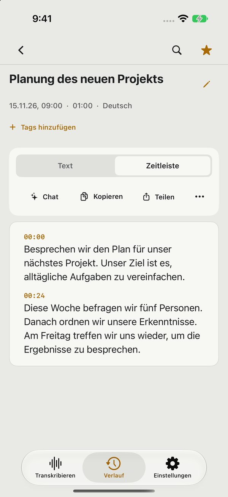
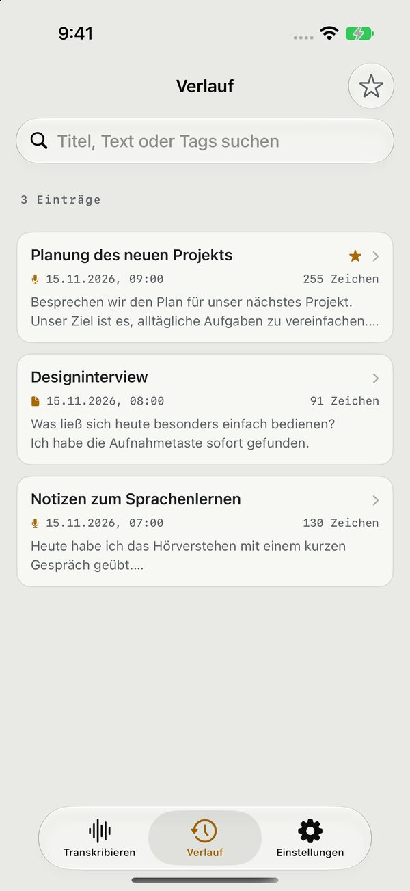
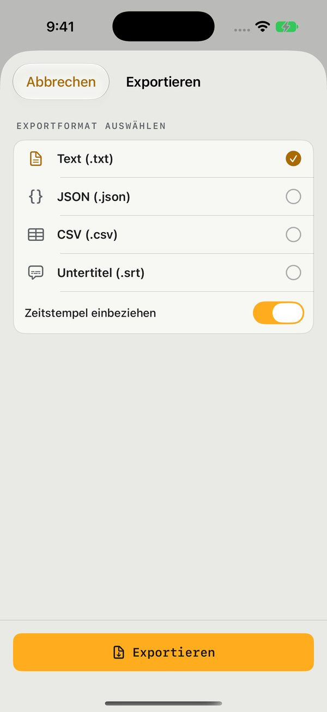

Deine Stimme,in Text verwandelt.
Nimm ein Meeting, eine Vorlesung oder ein Interview auf – oder importiere eine Audio- oder Videodatei – und erhalte eine Mitschrift auf deinem iPhone oder iPad.
Live-Transkription beim Aufnehmen auf unterstützten Geräten ab iOS 26. Mit aktiviertem Apple Intelligence ab iOS 26 kannst du im Chat eine KI-Zusammenfassung anfordern.
- Alle Funktionen kostenlos
- Keine Werbung
- Keine In-App-Käufe
- Kein Konto
- iPhone & iPad
Alle Funktionen, kostenlos.
Es gibt keine kostenpflichtige Stufe. Alles, was auf dieser Seite aufgeführt ist – Aufnahme, Dateiimport, alle Whisper-Modelle, Exporte, Verlauf, Tags, Apple-Intelligence-Chat und Kurzbefehle – ist ohne Kosten verfügbar. Du musst kein Konto anlegen, und die App zeigt keine Werbung.
- Kein Abo und kein Einmalkauf
- Keine In-App-Käufe und keine gesperrten Funktionen
- Keine Werbung und kein Tracking durch Dritte
- Keine Registrierung und kein Login
- Keine Begrenzung der Aufnahmelänge oder Dateianzahl durch die App – Gerätespeicher, Arbeitsspeicher und Akku gelten weiterhin
Von der Aufnahme zur Mitschrift
Aufnehmen oder importieren
Tippe, um mit dem Mikrofon aufzunehmen, oder wähle eine Audio- oder Videodatei aus der Dateien-App oder aus Fotos. Während der Aufnahme kannst du pausieren und fortsetzen.
Lesen, bearbeiten und exportieren
Prüfe den Text mit Zeitstempeln, korrigiere Fehler und teile ihn dann als TXT, CSV, JSON oder SRT-Untertitel.
Was du damit machen kannst
Ein genauerer Blick auf die wichtigsten Bereiche der App.
Aufnehmen oder eigene Dateien mitbringen
Starte eine Aufnahme mit einem Fingertipp oder importiere etwas, das du schon hast. Die App konvertiert das Audio und transkribiert es direkt auf dem Gerät.
- Mikrofonaufnahme mit Pause und Fortsetzen sowie ein Mikrofonumschalter für externe Mikrofone
- Aufnahmestatus auf dem Sperrbildschirm und in der Dynamic Island über eine Live Activity (auf unterstützten iPhones)
- Audio und Video wie M4A, WAV, MP3, MP4 und MOV aus der Dateien-App importieren
- Ein Video direkt aus deiner Fotos-Mediathek auswählen
- Optional „Bildschirm eingeschaltet lassen“ für lange Sitzungen
Whisper, direkt auf deinem Gerät
Die App nutzt die offenen Whisper-Modelle von OpenAI über whisper.cpp, mit Metal-GPU-Beschleunigung, wo verfügbar. Du kannst Geschwindigkeit gegen Genauigkeit tauschen, indem du ein anderes Modell wählst.
- 10 Whisper-Modelle, von Tiny (etwa 15 MB) bis Large v3 Turbo und Medium (bis zu etwa 1,5 GB)
- Automatische Erkennung der gesprochenen Sprache oder Auswahl aus 18 Sprachen
- Optionale Übersetzung des Ergebnisses ins Englische
- Optionaler Core-ML-Encoder-Download, der die Verarbeitung auf unterstützten Geräten beschleunigen kann
- Unter iOS 26 oder neuer steht außerdem Apples Sprach-Engine auf dem Gerät als Alternative zur Verfügung

Zeitleiste oder Leseansicht
Wechsle zwischen einer klaren Textansicht und einer Zeitleiste mit Zeitstempeln. Spiele das Originalaudio ab, um zu prüfen, was gesagt wurde, und korrigiere den Text bei Bedarf.
- Text- und Zeitleistenansicht, mit optionalen Zeitstempeln
- Audiowiedergabe mit einstellbarer Geschwindigkeit und Position
- Mitschrift und Titel bearbeiten
- Einen einzelnen Absatz oder den gesamten Text kopieren
- In einer Mitschrift suchen

Ein durchsuchbarer Verlauf
Jede Mitschrift wird auf deinem Gerät gespeichert, sodass du später wieder darauf zugreifen kannst.
- Suche nach Titel, Text oder Tag
- Favoriten und Sortierung
- Tags, die du über alle Mitschriften hinweg hinzufügen, umbenennen, zusammenführen und löschen kannst
- Verlauf nach Tag filtern

Text, Daten oder Untertitel
Teile eine Mitschrift in dem Format, das zum nächsten Schritt passt – Notizen, eine Tabellenkalkulation, ein Skript oder einen Videoschnitt.
- TXT für Notizen und Dokumente
- CSV für Tabellenkalkulationen
- JSON mit Segmenten für deine eigenen Tools
- SRT-Untertitel für den Videoschnitt
- Die Originalaufnahme als Audiodatei teilen
Frag etwas zu einer Mitschrift iOS 26+
Auf Geräten, die Apple Intelligence unterstützen, kannst du dich mit einer Mitschrift unterhalten – nach einer Zusammenfassung, wichtigen Entscheidungen oder To-dos fragen – und einen Titel erzeugen lassen. Chats werden pro Mitschrift gespeichert. Lange Mitschriften werden abschnittsweise gelesen. Ein optionaler Modus mit Private Cloud Compute (iOS 27 oder neuer) ist standardmäßig aus.
Kurzbefehle & Siri
Nutze App-Kurzbefehle, um eine Aufnahme zu starten oder zu beenden, eine Mediendatei zu transkribieren, Transkriptionen zu finden, den Text einer Mitschrift abzurufen oder Tags und Favoriten hinzuzufügen – praktisch für Automatisierungen. Einige Aktionen erfordern eine neuere iOS-Version.
Alle Funktionen – alle kostenlos
Eine vollständige Liste dessen, was die App derzeit bietet. Nichts davon erfordert einen Kauf.
Aufnahme
- MikrofonaufnahmeGRATIS
- Aufnahme pausieren & fortsetzenAufnahmen überstehen auch Unterbrechungen wie AnrufeGRATIS
- Mikrofon wechselnGRATIS
- Live Activity während der AufnahmeSperrbildschirm und Dynamic IslandGRATIS
- Audiodateien importierenM4A, WAV, MP3 und andere gängige FormateGRATIS
- Videodateien importierenMP4, MOV und andere gängige FormateGRATIS
- Video aus Fotos importierenGRATIS
- Live-TranskriptionText erscheint während du sprichst · iOS 26+GRATIS
Spracherkennung
- Whisper direkt auf dem Gerät (whisper.cpp)GRATIS
- Alle 10 Whisper-ModelleTiny, Base, Small, Medium, Large v3 Turbo und kompakte VariantenGRATIS
- Apples Sprach-Engine auf dem GerätiOS 26+, Sprachen werden von iOS verwaltetGRATIS
- Automatische Erkennung oder Auswahl aus 18 SprachenGRATIS
- Übersetzung ins EnglischeGRATIS
- Metal-GPU-BeschleunigungWo das Gerät es unterstütztGRATIS
- Core-ML-Encoder (optionaler Download)GRATIS
Werkzeuge für Genauigkeit & Leistung
- Stille Abschnitte überspringenSprachaktivitätserkennung (VAD)GRATIS
- Audio bereinigenRauschunterdrückung und LautstärkenormalisierungGRATIS
- Vokabular-HinweiseNamen und Begriffe, auf die das Modell vorbereitet wirdGRATIS
- Flash AttentionKann den Speicherbedarf senken und die Verarbeitung beschleunigenGRATIS
- Zeitstempel einfügenGRATIS
Lesen & Bearbeiten
- Textansicht und ZeitleistenansichtGRATIS
- Audiowiedergabe mit GeschwindigkeitsregelungGRATIS
- Mitschriftentext und Titel bearbeitenGRATIS
- Absatz oder gesamten Text kopierenGRATIS
- Suche innerhalb einer MitschriftGRATIS
Verlauf & Organisation
- Gespeicherter TranskriptionsverlaufGRATIS
- Suche nach Titel, Text oder TagGRATIS
- Favoriten und SortierungGRATIS
- Tags: hinzufügen, umbenennen, zusammenführen, löschenGRATIS
- Nach Tag filternGRATIS
Export & Teilen
- Text (.txt)GRATIS
- CSV (.csv)GRATIS
- JSON (.json)GRATIS
- Untertitel (.srt)GRATIS
- Originalaudio teilenGRATIS
- Text über das Teilen-Menü teilenGRATIS
Apple Intelligence
- Chat zu einer MitschriftiOS 26+ auf unterstützten GerätenGRATIS
- Gespeicherter Chatverlauf pro MitschriftGRATIS
- Titel generierenGRATIS
- Private-Cloud-Compute-ModusOptional · iOS 27+ · standardmäßig ausGRATIS
Automatisierung & App
- Kurzbefehle & Siri-AktionenGRATIS
- Layouts für iPhone und iPadGRATIS
- Helles, dunkles oder System-ErscheinungsbildGRATIS
- Oberfläche in 11 SprachenGRATIS
- Modell- und SpeicherverwaltungGRATIS
Funktionen mit einer iOS-Version erfordern diese Version oder neuer. Apple-Intelligence-Funktionen hängen außerdem von der Geräteunterstützung, der Region und den Spracheinstellungen ab.
Entwickelt, damit dein Audio auf deinem Gerät bleibt
Die Whisper-Transkription läuft lokal. Die App enthält keine Werbung, keine Analyse-SDKs und kein Tracking durch Dritte und sendet dein Audio oder deine Mitschriften nicht an den Entwickler.
Bleibt auf deinem Gerät
Aufnahmen, importierte Medien, Mitschriften, Tags, Chats und Einstellungen werden in der App auf deinem Gerät gespeichert. Du kannst sie jederzeit in der App löschen.
Wann sich die App verbindet
Um Whisper-, VAD- und Core-ML-Modelldateien von Hugging Face herunterzuladen; um im App Store nach einer neueren Version zu suchen; und wenn iOS Sprachmodelle für Apples Engine herunterlädt.
Deine Entscheidung
Private Cloud Compute für Apple Intelligence ist standardmäßig aus. Wenn du es einschaltest, werden Mitschriftentext und deine Frage von Apples Private Cloud Compute verarbeitet. Wenn du einen Export teilst, wird er dorthin gesendet, wohin du ihn schickst.
Bevor du loslegst
Gerät & System
iPhone oder iPad mit iOS / iPadOS 17.0 oder neuer. Live-Transkription, Apples Sprach-Engine und Apple Intelligence auf dem Gerät erfordern iOS 26 oder neuer; Private Cloud Compute erfordert iOS 27 oder neuer.
Speicher & Netzwerk
Eine Internetverbindung und freier Speicher sind nötig, um ein Modell herunterzuladen (etwa 15 MB bis 1,5 GB je nach Modell). Für Aufnahmen wird die Mikrofonberechtigung benötigt.
Häufige Fragen
Ist die App wirklich kostenlos?
Ja. Derzeit sind alle Funktionen kostenlos nutzbar. Es gibt keine Werbung, keine In-App-Käufe, keine Abos und keine Kontoanmeldung.
Funktioniert sie offline?
Die Whisper-Transkription ist dafür ausgelegt, auf deinem Gerät zu laufen. Du brauchst einmal eine Internetverbindung, um ein Modell herunterzuladen; danach können Aufnahme und Transkription mit diesem Modell in der Regel ohne Verbindung erfolgen. Das Herunterladen weiterer Modelle, die Suche nach Updates und der optionale Private-Cloud-Compute-Modus brauchen eine Verbindung.
Wird mein Audio an einen Server gesendet?
Die Whisper-Transkription läuft lokal, und die App sendet weder Audio noch Mitschriften an den Entwickler. Die einzige Ausnahme, die du steuerst, ist der optionale Private-Cloud-Compute-Modus für den Apple-Intelligence-Chat: Er sendet Mitschriftentext und deine Frage an Apples Private Cloud Compute. Er ist standardmäßig aus.
Welche Dateien kann ich importieren und exportieren?
Du kannst gängige Audio- und Videoformate wie M4A, WAV, MP3, MP4 und MOV aus der Dateien-App sowie Videos aus Fotos importieren. Mitschriften lassen sich als TXT, CSV, JSON oder SRT exportieren, und Aufnahmen können als Audiodateien geteilt werden.
Welche Sprachen werden unterstützt?
Für die Transkription kannst du die automatische Erkennung nutzen oder Englisch, Japanisch, Chinesisch, Koreanisch, Spanisch, Französisch, Deutsch, Italienisch, Portugiesisch, Russisch, Arabisch, Hindi, Niederländisch, Polnisch, Türkisch, Vietnamesisch, Thailändisch oder Indonesisch wählen. Die Ergebnisse können je nach Sprache variieren. Die Oberfläche der App ist in 11 Sprachen verfügbar.
Kann sie Untertitel für ein Video erstellen?
Ja. Importiere ein Video, transkribiere es und exportiere dann als SRT. Die meisten Videoprogramme können SRT-Dateien importieren. Das Timing der Untertitel folgt den erkannten Segmenten, daher kann es sinnvoll sein, es im Editor anzupassen.
Wie lang kann eine Aufnahme sein?
Die App setzt kein festes Limit. In der Praxis hängt sehr langes Audio vom freien Speicher, Arbeitsspeicher und Akku deines Geräts ab, und größere Modelle brauchen länger. Wenn eine lange Datei fehlschlägt, können ein kleineres Modell oder Flash Attention helfen.
Ist das eine offizielle OpenAI-App?
Nein. Dies ist eine unabhängige App, die die offen veröffentlichten Whisper-Modelle von OpenAI über das Open-Source-Projekt whisper.cpp ausführt. Sie ist nicht mit OpenAI verbunden und wird von OpenAI nicht unterstützt.